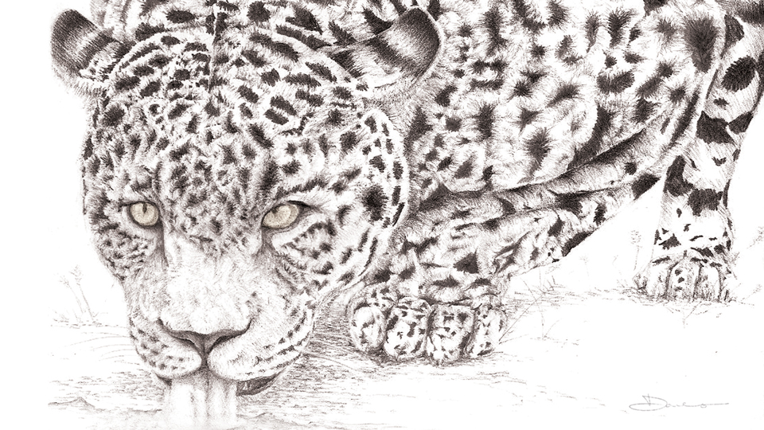
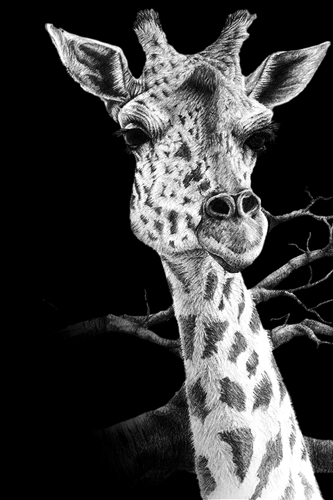

Simba (colored pencil, 2005) [11 × 8.5]
September 2012
Sketchbook 1
Dane Aleksander—wildlife painter in Halifax, Nova Scotia.
My passion for art is inspired by nature. Imagery from The Lion King (film, 1994) lent an early sense of both creative and emotive freedom within visual media. I remember sketching Simba over and over standing atop Pride Rock as rays of sunlight opened the sky. I remember wanting to capture that moment, and I continue to enjoy taking time to draw.
Three Little Squirrels (graphic pencil, 2011) [12 × 9]
Three Big Cats (graphic pencil, 2008) [12 × 9]
Down by the River (graphic pencil, 2007) [12 × 9]
Silver Gorilla (scratchboard, 2010) [10 × 8]

Holocene (graphic pencil, 2011) [9 × 12]

Winter Wind (graphic and colored pencil, 2008) [11 × 8.5]